Conceptions of Europeanness and their political consequences among German citizens
Isabela Zeberio · Theresa Kuhn
University of Amsterdam
19/06/2026
“Fighting for freedom connects us as Europeans. Our past and our present. Our nations and our generations. For me, this is the raison d’être of our Union and it remains its driving force more than ever today… And above all it will mean staying united and true to our values.” Commission President von der Leyen (Leyen, 2024)
“We, as Europeans, are more than the sum of our national identities. Our history, our heritage, our Judeo-Christian roots and our cultural diversity define us.” European People’s Party manifesto (European People’s Party, 2024)
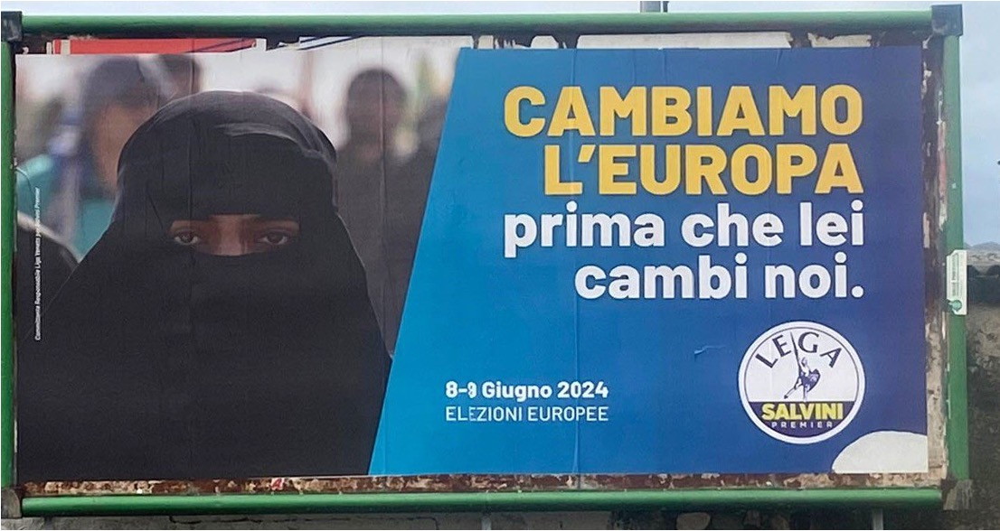
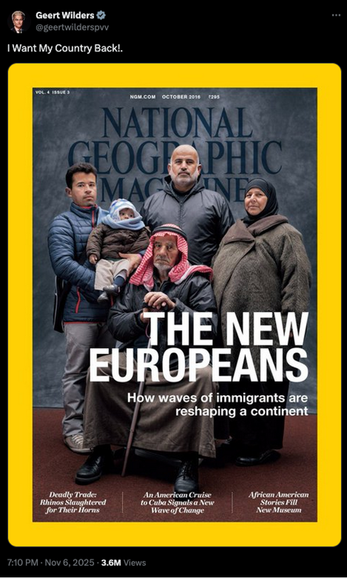
Citizens’ self-categorisation as European, together with their evaluation of their membership and their affective attachment to Europe and other Europeans (Bergbauer, 2018)
→ abstract, decontextualized, and only the in-group.
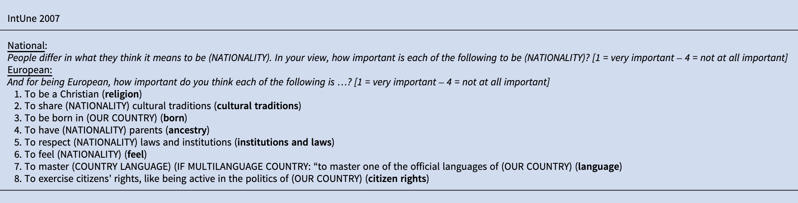
1. The civic–ethnic dichotomy sorts people into types.
But individuals mix (Lindstam et al., 2021).
Ideal types, not citizen reality (Piwoni & Mußotter, 2023).
2. Civic = Inclusive & Ethnic = Exclusive.
Yet civic language can do exclusionary work.
Selective liberalism: liberal values invoked to reject what is associated with Islam (López Ortega & Turnbull-Dugarte, 2025; Simonsen & Bonikowski, 2020).
Does the same hold for Europeanness — a thinner, more permeable identity that was create to Unite in diversity?
RQ1 — Shape of the boundary. What criteria do Germans use to include and to exclude — and are the two sides built from the same logic or different ones?
RQ2 — Political consequences. Do distinct conceptions of Europeanness carry distinct politics — for attitudes and for vote?
Expectations:
GESIS Panel.pop — probability-based German sample (Bosnjak et al., 2017) Wave lc (Aug–Oct 2024), N = 3,047
Two open-ended questions, in respondents’ own words:
Hybrid inductive–deductive thematic coding: 20 codes → 8 themes: Origin, values, culture, procedural, (socio)economic, residence, religion, meaningless
The five most-mentioned categories — on both sides:
Values · Democratic attachment · Traits & behaviour · Rights & obligations · European feeling
“Anyone who has moved here can also become European, as long as they feel attached to our values.”
Same respondent, both questions:
Belongs: “.When I think of Europe, I think of Paris, the Côte d’Azur, England, London, my sister in Spain. No border controls. The very dear Nordic countries. No specific characteristic comes to mind. Hospitality and tolerance.”
Does not belong: “The only characteristic that comes to mind is the intolerant Muslim men — I would see them as non-European; men who do not see women as equal human beings.”
Jaccard overlap: 23% used identical criteria for both questions, 28% none in common, 49% partial.
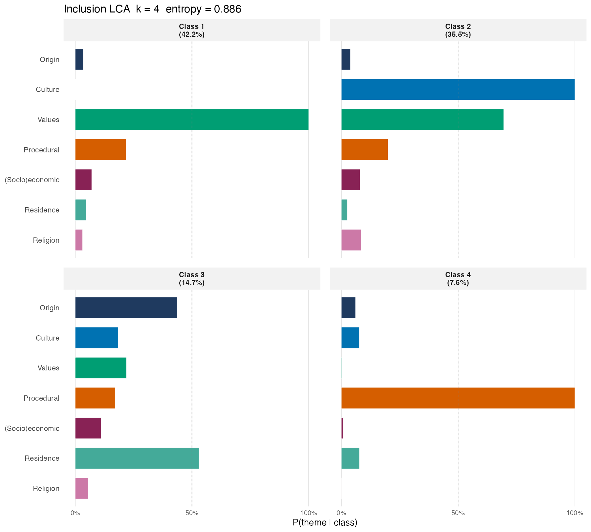
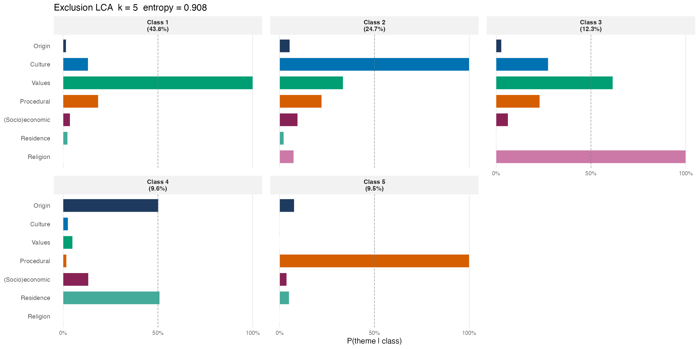
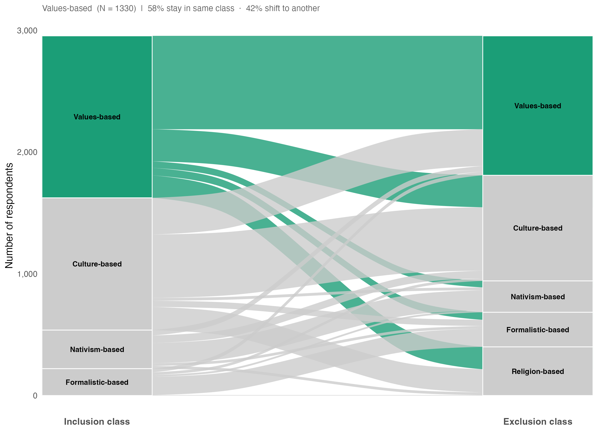
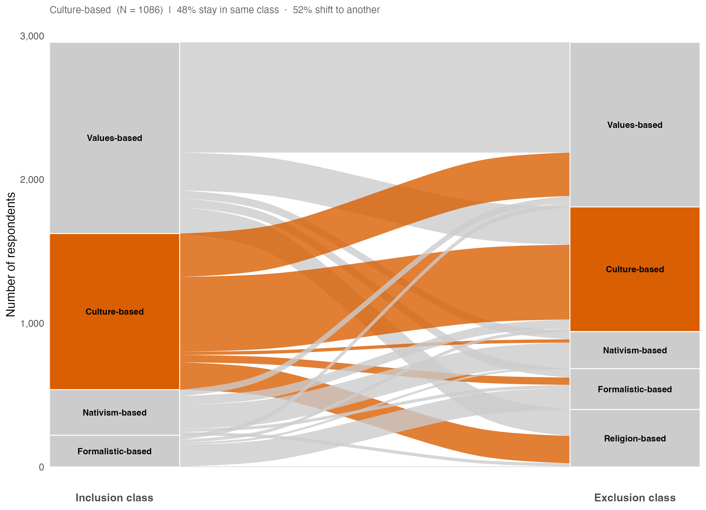
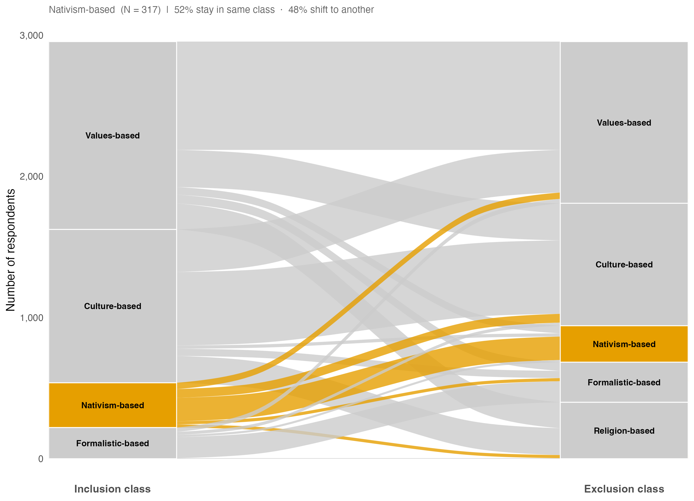
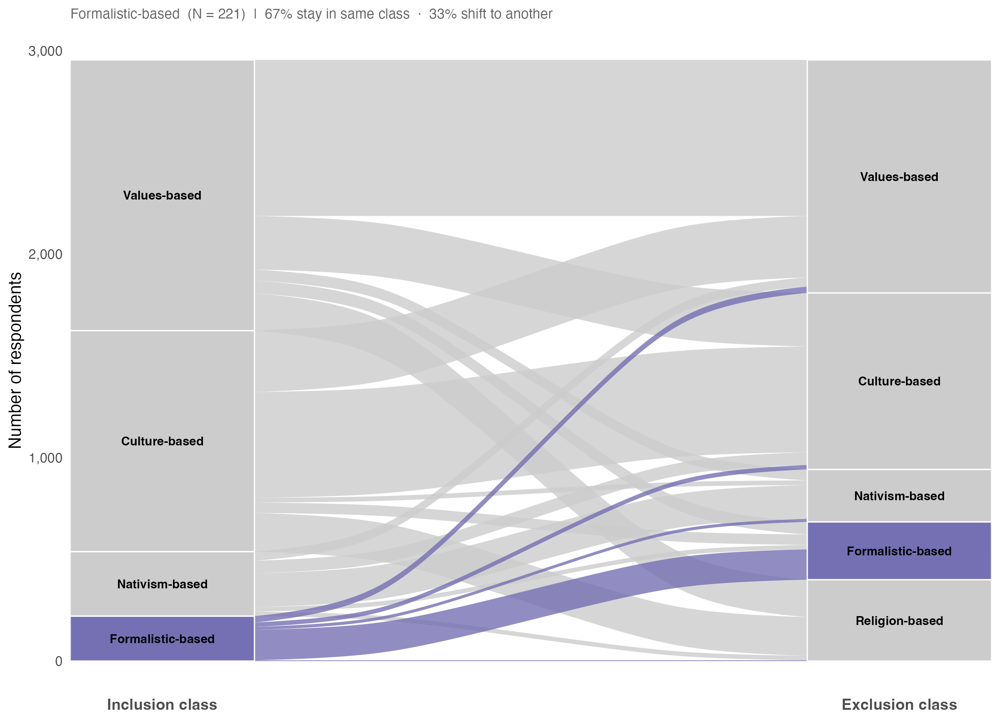
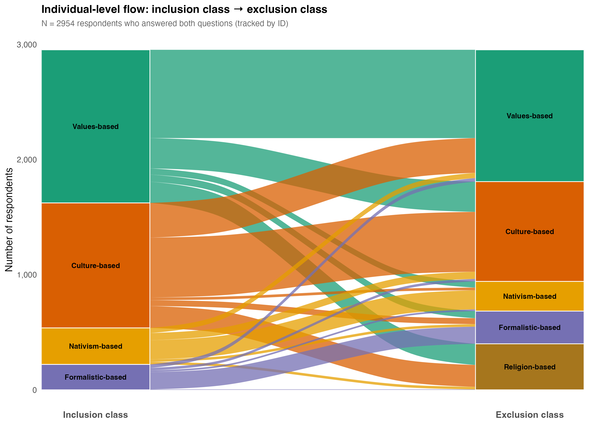
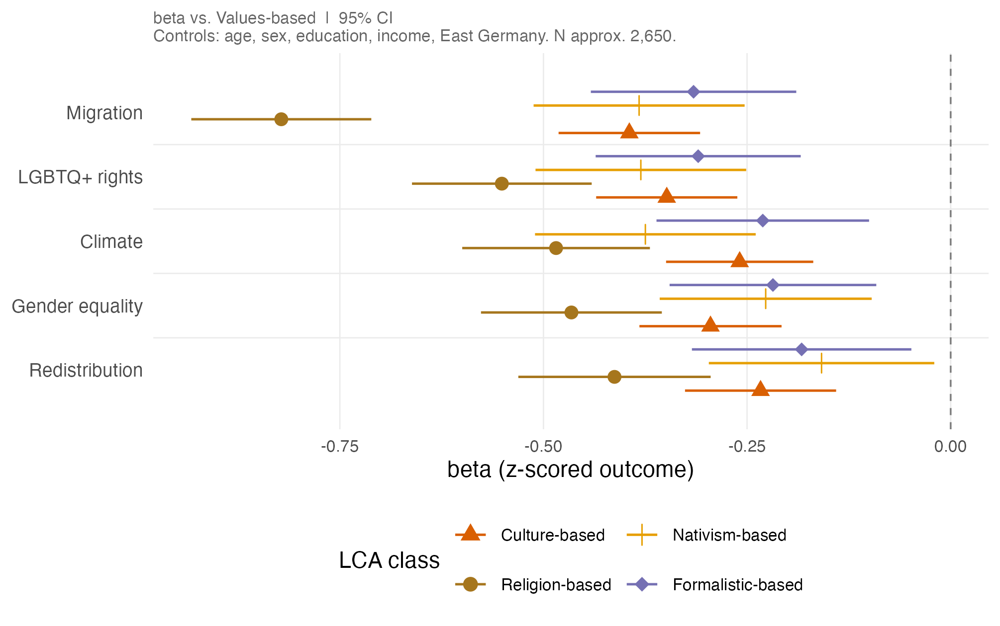
R²: Migration (0.16) · LGBTQ+ rights (0.16) · Gender equality (0.15) · Climate (0.11)
Redistribution (0.04)
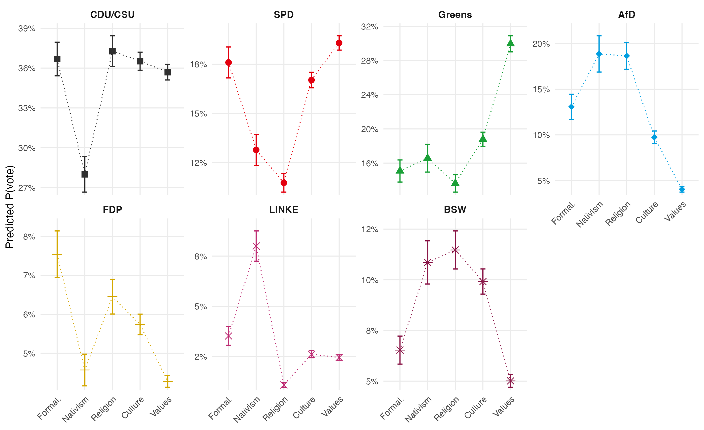
R²: AfD (0.15) · Greens (0.10) · BSW (0.10) · Left (0.09) FDP (0.05) · CDU/CSU (0.02) · SPD (0.02)
1. Boundaries are constructed on both sides. A group is defined not only by what its members share but by where the line is drawn to keep others out.
2. Values are mentioned by almost everyone, but not in the same way.
Civic vocabulary of belonging + religious exclusion (Alba & Foner, 2015; Simonsen & Bonikowski, 2020). Selective liberalism (López Ortega & Turnbull-Dugarte, 2025)
3. Conceptions show up in political attitudes. The values-based class is the most progressive on migration, LGBTQ+ rights, and gender equality. The religion-based class is the most restrictive.
Better at predicting cultural attitudes than economic.
4. And in the ballot box, but only at the poles. Conceptions of Europeanness predict vote for Greens (values-based), AfD (religion- and nativism-based), and BSW (culture- and religion-based). The centre — CDU/CSU, SPD — is undifferentiated.
Contact information:
| Theme | Category | % incl. | Example (inclusion) | % excl. | Example (exclusion) |
|---|---|---|---|---|---|
| Origin | Birthplace | 8.1 | “Born in Europe” | 6.5 | “Not born in Europe” |
| Ancestry | 3.0 | “Parents are from Europe” | 3.6 | “No European roots” | |
| Physical appearance | 0.4 | “Light skin colour” | 0.4 | “Being Black” | |
| Values | Values | 46.9 | “Respect for individual dignity” | 39.7 | “Rejects European values” |
| Democratic attachment | 27.3 | “Defending democracy” | 18.7 | “Rejects / fights democracy” | |
| European feeling | 17.7 | “A ‘we-feeling’ beyond borders” | 16.3 | “Doesn’t identify with Europe” | |
| (Euro)nationalism | 3.6 | “Love of one’s own country” | 1.4 | “Not thinking nationally” | |
| Culture | Traits & behaviour | 21.9 | “Reliable and punctual” | 18.7 | “Intolerant, selfish, violent” |
| Culture | 10.8 | “The European way of life” | 9.1 | “Not part of European culture” | |
| Language | 5.5 | “Speaks a European language” | 3.1 | “Speaks no European language” | |
| Integration | 5.0 | “Integrate, don’t impose beliefs” | 6.0 | “Doesn’t want to integrate” | |
| European knowledge | 3.6 | “Well-informed about the EU” | 1.0 | “No knowledge of the EU” | |
| History | 1.8 | “A shared past” | 0.6 | “No historical awareness” | |
| Procedural | Rights & obligations | 19.0 | “Adhering to law and order” | 19.2 | “Doesn’t abide by laws” |
| Legal citizenship | 8.6 | “Citizenship of an EU country” | 7.0 | “No European passport” | |
| (Socio)economic | Personal contribution | 3.9 | “Not living off the state” | 5.0 | “Only benefits from welfare” |
| Economic security | 3.7 | “Free trade and movement” | 1.2 | “Wants to close inner borders” | |
| Residence | Place of residence | 10.8 | “Lives and works in Europe” | 6.7 | “Lives outside Europe” |
| Religion | Religion | 4.9 | “Being Christian; no headscarf” | 13.8 | “Being Muslim; veiled women” |
| Meaningless | EU identity rejection | 2.8 | “There is no European identity” | 2.1 | “No such thing as it” |
% = share of respondents mentioning the code on each side (multi-label; columns do not sum to 100). Religion: 4.9% → 13.8% is the asymmetry in one number.
| Inclusion class | Values | Culture | Formalistic | Nativism | Religion |
|---|---|---|---|---|---|
| Values-based | 57.7 | 19.8 | 4.7 | 4.1 | 13.8 |
| Culture-based | 27.8 | 47.9 | 4.7 | 2.1 | 17.5 |
| Formalistic-based | 14.0 | 10.0 | 67.4 | 6.8 | 1.8 |
| Nativism-based | 14.2 | 19.6 | 6.9 | 52.4 | 6.9 |
Row percentages; diagonal (bold) = consistent class across both questions.
54% of respondents use the same logic for inclusion and exclusion.
How a single criterion shifts meaning by what it sits beside:
Gender equality and sexual-minority rights recast as European achievements, set against an Islam framed as illiberal (Brubaker, 2017).
Inclusion (selected: k = 4)
| k | AIC | BIC | ΔBIC | Entropy | Min. class |
|---|---|---|---|---|---|
| 2 | 19,266 | 19,358 | — | 0.637 | 41.1% |
| 3 | 19,019 | 19,159 | −199 | 0.819 | 25.2% |
| 4 | 18,799 | 18,988 | −171 | 0.886 | 7.6% |
| 5 | 18,724 | 18,962 | −26 | 0.765 | 6.2% |
| 6 | 18,617 | 18,904 | −59 | 0.870 | 4.0% |
Exclusion (selected: k = 5)
| k | AIC | BIC | ΔBIC | Entropy | Min. class |
|---|---|---|---|---|---|
| 2 | 18,244 | 18,335 | — | 0.813 | 44.0% |
| 3 | 17,958 | 18,097 | −238 | 0.854 | 23.5% |
| 4 | 17,710 | 17,897 | −200 | 0.896 | 10.5% |
| 5 | 17,521 | 17,756 | −141 | 0.908 | 9.5% |
| 6 | 17,412 | 17,696 | −61 | 0.894 | 4.9% |
Selection on joint basis of fit (BIC elbow), entropy, and interpretability. k = 5 for exclusion: BIC elbow + entropy peak + religion class emerges as qualitatively new profile (P = 1.00). At k = 4 religion loads weakly across all classes (range 0.13–0.23) — no organizing class.
| Outcome | Culture | Religion | Nativism | Formalistic | \(N\) | \(R^2\) |
|---|---|---|---|---|---|---|
| Migration | −0.40*** (0.04) | −0.82*** (0.06) | −0.38*** (0.07) | −0.32*** (0.06) | 2,646 | 0.16 |
| LGBTQ+ rights | −0.35*** (0.04) | −0.55*** (0.06) | −0.38*** (0.07) | −0.31*** (0.06) | 2,648 | 0.16 |
| Gender equality | −0.30*** (0.04) | −0.47*** (0.06) | −0.23*** (0.07) | −0.22*** (0.07) | 2,646 | 0.15 |
| Climate | −0.26*** (0.05) | −0.49*** (0.06) | −0.38*** (0.07) | −0.23*** (0.07) | 2,574 | 0.11 |
| Redistribution | −0.23*** (0.05) | −0.41*** (0.06) | −0.16* (0.07) | −0.18** (0.07) | 2,647 | 0.04 |
β (SE), OLS, z-scored composites. Reference: values-based. Controls: age, sex, education, income, East Germany.
* p<.05 · ** p<.01 · *** p<.001
| Class | CDU/CSU | SPD | Greens | AfD | FDP | Left | BSW |
|---|---|---|---|---|---|---|---|
| Culture | 0.04 (0.12) | −0.12 (0.15) | −0.55*** (0.14) | 0.86*** (0.23) | 0.42 (0.25) | −0.03 (0.35) | 0.66** (0.22) |
| Religion | 0.10 (0.15) | −0.54** (0.21) | −0.91*** (0.20) | 1.62*** (0.24) | 0.56 (0.30) | −1.02 (0.63) | 0.76** (0.26) |
| Nativism | −0.21 (0.19) | −0.27 (0.25) | −0.76*** (0.23) | 1.44*** (0.28) | 0.21 (0.41) | 0.92* (0.37) | 0.54 (0.30) |
| Formalistic | 0.06 (0.17) | −0.07 (0.21) | −0.68** (0.22) | 1.08*** (0.29) | 0.79* (0.33) | 0.18 (0.46) | 0.03 (0.34) |
| R² | 0.02 | 0.02 | 0.10 | 0.15 | 0.05 | 0.09 | 0.10 |
Log-odds (SE). Separate binary logits, reference: values-based. Controls: age, sex, education, income, East Germany. EP 2024 vote.
* p<.05 · ** p<.01 · *** p<.001
| Outcome | Religion (M2) | + Religiosity | + National pride |
|---|---|---|---|
| Migration | −0.82*** | −0.85*** | −0.82*** |
| LGBTQ+ rights | −0.55*** | −0.60*** | −0.54*** |
| Gender equality | −0.47*** | −0.51*** | −0.49*** |
| Climate | −0.49*** | −0.51*** | −0.50*** |
| Redistribution | −0.41*** | −0.42*** | −0.38*** |
β, OLS, z-scored composites. Religion-based class vs. values-based reference. Adding personal religiosity and German national pride leaves the religion-based class undiminished — the class reflects boundary-drawing logic, not personal piety or national attachment.
| Outcome | Culture | Nativism | Formalistic | \(N\) | \(R^2\) |
|---|---|---|---|---|---|
| Migration | −0.16*** (0.04) | −0.18** (0.06) | −0.15* (0.07) | 2,814 | 0.09 |
| LGBTQ+ rights | −0.15*** (0.04) | −0.22*** (0.06) | −0.14* (0.07) | 2,813 | 0.14 |
| Gender equality | −0.16*** (0.04) | −0.19** (0.06) | −0.06 (0.07) | 2,814 | 0.13 |
| Climate | −0.09* (0.04) | −0.24*** (0.06) | −0.18* (0.07) | 2,736 | 0.09 |
| Redistribution | −0.14*** (0.04) | −0.10 (0.06) | −0.18* (0.07) | 2,812 | 0.03 |
β (SE), OLS, z-scored composites. Reference: values-based. Controls: age, sex, education, income, East Germany. No religion class on the inclusion side — pattern holds but contrasts are smaller, as expected.
Three approaches tried and rejected:
Cohen’s κ > 0.80 on all 20 categories (two trained native German-speaking coders, 15% double-coded).